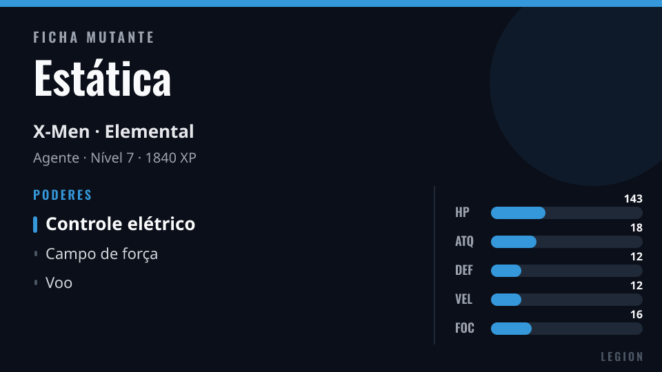

Cérebro
Recepção e cadastro
Recebe quem chega, guia o cadastro do mutante (facção, poder principal, secundários, codinome) e cuida dos cargos de facção e rank.
RPG mutante para Discord
Cada membro cria um mutante original, escolhe facção e poderes, e sobe de nível com trivia, missões, lutas e eventos que mexem com o servidor inteiro. Tudo dentro do Discord.
Gratuito, auto-hospedável, sem nada à venda que afete o jogo.

/perfil.Um único container roda os cinco. Ligue só os que quiser; o Cérebro é sempre o primeiro.
Recepção e cadastro
Recebe quem chega, guia o cadastro do mutante (facção, poder principal, secundários, codinome) e cuida dos cargos de facção e rank.
XP, trivia e missões
Trivia rápida, sequências diárias, ranking e missões com escolhas, sozinho ou em grupo de até 4.
Tutorial e ajuda
Tutorial por DM com XP a cada passo, /ajuda, glossário, idioma (pt-BR ou inglês) e o guia "como jogar" fixado.
Combate e moderação
Lutas por turnos com dados conferíveis, treino, limites contra abuso e denúncias que chegam só para a staff.
Inimigos e eventos
Invasões semanais em que todas as facções atacam o mesmo alvo, raids com chefe e inimigos escalados para o grupo.
#boas-vindas e aceita as regras./trivia, /missao, /treino e os eventos dão XP, níveis e os ranks Recruta, Agente e Veterano.Precisa de Docker e de um computador que fique ligado (um Raspberry Pi serve). Seus dados ficam com você, num arquivo SQLite.
legion init e responda às perguntas.legion doctor.# 1. configurar
docker run --rm -it -v "$PWD:/out" \
ghcr.io/uminocelo/legion legion init --out /out
# 2. subir
docker compose up -d
# 3. conferir
docker compose run --rm legion legion doctorNinguém joga como um personagem canônico. Cada ficha é uma criação do jogador.
O projeto vive de doações. Benefícios de apoiador são só cosméticos.
Roda na sua máquina. Nada sai do seu servidor além do que o Discord já vê.
Perguntas, missões e inimigos novos entram pelo próprio Discord. Nenhuma punição é automática.